2110C54 gear selection and engagement unit - r r
- Path
- Procedures > 21 GEARBOX > 2110 MANUAL GEARBOX AND DIFFERENTIAL > 2110C gear cases and covers of manual gearbox with differential > 2110C54 gear selection and engagement unit - r r
- Kind
- repair procedure (removal / refitting; the operation number is the code)
- Applies to
- all engines; all production periods
- Interactive page
- https://sloeber94.github.io/elrnDB-a147/en/#/3026034
Applies to: engines: 1.6 TS, 2.0 TS; all production periods
 Dismantling
Dismantling
 Reassembling
Reassembling1. Remove the O-ring.
Position the gear selector and engagement assembly in the vice fitted with protective jaws.
2. Lift up the rubber protection.
3. Lift up the selector to release it from the control shaft.
Remove the gear selector and engagement assembly from the vice.
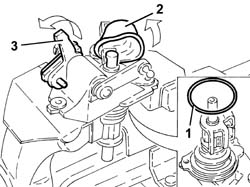
Applies to: engines: 1.6 TS, 2.0 TS; all production periods
1. Remove the retaining ring.
2. Remove the pin.
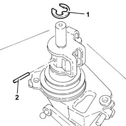
Applies to: engines: 1.6 TS, 2.0 TS; all production periods
1. Remove the selector (1a) and the bracket (1b).
2. Remove the cover.
3. Remove the springs.
4. Remove the bush.
5. Remove the mount.
6. Remove the flange.
7. Separate the rubber protection (7a) from the control shaft (7b).
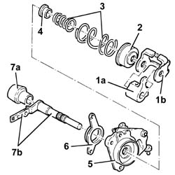
Applies to: engines: 1.6 TS, 2.0 TS; all production periods
Position the support in the vice fitted with protective jaws.
1. Undo the nut (1a) and remove the spring (1b).
Remove the support from the vice.
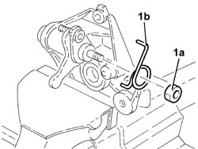
Applies to: engines: 1.6 TS, 2.0 TS; all production periods
1. Remove the bush.
2. Remove the selector.
3. Remove the lever.
4. Remove the two bushes.
5. Remove the seal (5a) and the bush (5b) using a suitable tool (5c).
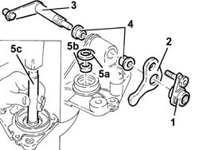
Applies to: engines: 1.6 TS, 2.0 TS; all production periods
Reassembling
Dismantling1. Fit the bush (1a) and the seal (1b) using a suitable tool (1c).
2. Place the two bushes in their housings.
3. Place the lever back in its housing.
4. Place the selector back in its housing.
5. Place the bush back in its housing.
Applies to: engines: 1.6 TS, 2.0 TS; all production periods
Position the support in the vice fitted with protective jaws.
Place the spring back in its housing and tighten the nut.
Remove the support from the vice.
Place the rubber protection in its seating on the control shaft.
Place the flange in its seating.
Place the support in its seating.
Place the bush back in its housing.
Place the springs in their seatings.
Place the cover in its seating.
1. Place the selector (1a) and its support (1b) in their seatings as shown in the diagram.
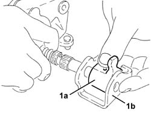
Applies to: engines: 1.6 TS, 2.0 TS; all production periods
Place the pin back in its seating.
Place the retaining ring in its seating.
Place the gear selection and engagement assembly in a vice fitted with protective jaws.
Connect the selector to the control shaft.
Fit the rubber protection.
Remove the gear selector and engagement assembly from the vice.
Place a new O-ring in its seating.
Applies to: all engines; all production periods
Dismantling
Reassembling1. Remove the O-ring.
Position the gear selector and engagement assembly in the vice fitted with protective jaws.
2. Lift up the rubber protection.
3. Lift up the selector to release it from the control shaft.
Remove the gear selector and engagement assembly from the vice.
Applies to: all engines; all production periods
1. Remove the retaining ring.
2. Remove the pin.
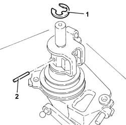
Applies to: all engines; all production periods
1. Remove the selector (1a) and the bracket (1b).
2. Remove the cover.
3. Remove the springs.
4. Remove the bush.
5. Remove the mount.
6. Remove the flange.
7. Separate the rubber protection (7a) from the control shaft (7b).
Applies to: all engines; all production periods
Position the support in the vice fitted with protective jaws.
1. Undo the nut (1a) and remove the spring (1b).
Remove the support from the vice.
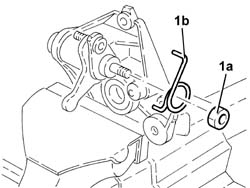
Applies to: all engines; all production periods
1. Remove the bush.
2. Remove the selector.
3. Remove the lever.
4. Remove the two bushes.
5. Remove the seal (5a) and the bush (5b) using a suitable tool (5c).
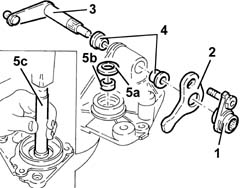
Applies to: all engines; all production periods
Reassembling
Dismantling1. Fit the bush (1a) and the seal (1b) using a suitable tool (1c).
2. Fit the two bushes.
3. Fit the lever.
4. Fit the selector.
5. Fit the bush.
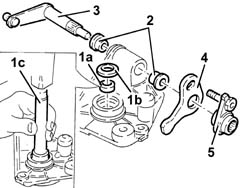
Applies to: all engines; all production periods
Position the support in the vice fitted with protective jaws.
Fit the spring and tighten the nut.
Remove the support from the vice.
Fit the rubber protection on the control shaft.
Fit the flange.
Fit the support.
Fit the bush.
Fit the springs.
Fit the cover.
1. Fit the selector (1a) and the support (1b) as shown in the diagram.
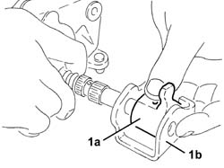
Applies to: all engines; all production periods
Fit the pin.
Fit the retaining ring.
Fit the gear selector and engagement assembly in the vice fitted with protective jaws.
Connect the selector to the control shaft.
Fit the rubber protection.
Remove the gear selector and engagement assembly from the vice.
Fit a new O-Ring seal.